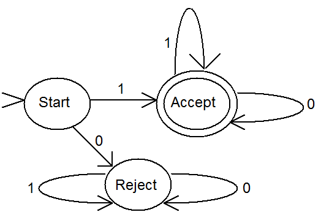

The final section of this text addresses three broad questions concerning the potential of computers. centers on a discussion of the fundamental theoretical and practical limits of computing. In essence, it asks (and to some degree answers) what computers are fundamentally capable of. Surprisingly, there are some things that no computer, ever, will be able to do. Chapter looks into computing and intelligence. The chapter discusses some of the techniques, promises, and failures of the branch of computer science known as artificial intelligence or AI. AI is concerned with making computers more human-like. reviews some of the history that has brought computing to where it is today, and then extrapolates current trends in an attempt to size up where the field is headed over the next three decades.
When trying to determine the limits of computing, two separate but related questions are generally of interest: “What problems can be solved in practice?” and “What problems, by their very nature, can never be solved?” The answer to the first question changes over time as computers become more powerful. The answer to the second question does not change.
Generally, the amount of time a program takes to run, together with the amount of space it requires to perform its computations, are the characteristics that are most important in determining whether the program is “practical.” If a program requires 48 hours to forecast tomorrow’s weather, it is not very practical. Likewise, a program will be of little use if it requires more memory than is available on the computer for which it was designed.
There are often many different ways to solve a specific problem. When there are multiple algorithms for solving a problem, and they all produce identical results, people generally prefer the algorithm that runs in the least time (or, sometimes, that uses the least space). Determining the “best” algorithm for solving a problem can, however, be a difficult issue, since the time and space requirements of different algorithms increase at different rates as the size of the problems they are solving increase. In other words, given two algorithms A and B, algorithm A may be faster than B on problems of size 10, but B may be faster than A on problems of size 100 or larger.
Computer scientists have developed methods for characterizing the efficiency of computer programs in terms of their time and space requirements, expressed as a function of the size of the problem being solved. What is most important about an algorithm is usually not how much time it takes solving a specific instance of a problem (e.g., sorting a particular list of names), but instead the manner in which compute time and memory requirements increase with increasing problem size (i.e., how quickly do the algorithm’s resource needs increase when presented with larger and larger input lists). The reason for this focus on rates of increase rather than absolute numbers is that computer programs are generally not used to solve the same exact instance of a problem over and over, but instead to solve many different instances of the same problem.
In other words, a program for sorting lists would probably not be used to sort the exact same list over and over, but would instead be used to sort a different list each time the program was run. Furthermore, the sizes of these lists will not all be identical. Some input lists will be shorter and others longer. Hence, in order to be able to compare different methods (algorithms) for sorting lists, we need to know how rapidly the time they take to sort a list increases as the input list becomes larger.
In addition to comparing existing algorithms, computer scientists are sometimes able to analyze a problem in such a way as to establish the minimum amount of effort that always must be expended to solve the problem. This minimum amount of effort, or “lower bound”, guarantees that no solution to the problem will take fewer than X steps for an input size of N. For example, no method of sorting 100 numbers can take fewer than 100 steps since, at the very least, each of the 100 numbers must be inspected to assure that it is in the proper order. In this particular example both N (the size of the input) and X (the number of steps) equal 100, but the actual problem size is irrelevant. We could have chosen to sort 10 numbers or 1,000 numbers. The important point is that the minimum number of steps to perform a sort is equal to the size of the input list, or in mathematical notation: X = N. Knowing the minimum number of steps required to solve a problem can be quite useful when trying to determine whether current methods of solving the problem are close to optimal, or whether better approaches probably exist, but have yet to be discovered.
To address the question of “What problems can never be solved?”, computer scientists design and study abstract models of computers. No thought is given to designing practical machines; the models are purposefully kept as simple as possible. This is done in order to ease the process of analyzing what problems these models can and cannot solve. There are three common computing models: finite state automata, push-down automata, and Turing machines. These models are only introduced here. More detailed descriptions are provided in Chapter .
Finite state automata consist of a collection of states (usually drawn as circles) and transitions between states (usually drawn as labeled arrows). Finite state automata are simple machines, with a limited amount of memory, that can process strings of input data one character at a time. As each character is read, the automaton traverses the transition labeled with the input character. After all input characters have been read, the input is accepted if the automaton is in a special “accepting” state. Otherwise the input is rejected. shows a finite state automaton that accepts all strings of zeros and ones that begin with a one. Even though finite automata are quite limited in what they can do, they are still quite useful. For example, programs based on finite automata are used to create efficient pattern matchers.
A finite automaton that accepts all strings of zeros and ones that begin with a one
Push-down automata are just finite automata with the addition of a “stack” of unlimited depth. A stack is a last-in, first-out data structure. It is similar to a stack of objects in real life – like a stack of cafeteria trays. Only the top item may be removed and additional items can only be placed on the “top” of the stack. Programs based on push-down automata are useful for translating other programs, written in high-level languages like C++, into low-level machine languages.
The final model of computing, the Turing machine[3], is essentially a finite automaton with unlimited memory. Turing machines can solve the same class of problems as general-purpose computers. However, it can be proven that certain, apparently straightforward, problems cannot be solved by Turing machines. This means that there are some problems that have no computable solution – no computer program can be written to solve these problems, ever.
For example, no computer program will ever exist that can take as input another program and its data; and reliably produce as output a message telling whether that program will “crash” on the given data. While this problem can be solved for special cases, such as programs without loops, it cannot be solved in general. This is unfortunate, since such a program would be quite useful for testing other computer programs to make sure they work properly, vastly simplifying the task of software engineering.
Even though computer scientists have identified some problems that they know cannot be solved by computers, in general they are not sure what the practical limits of computing are. Currently, there are many tasks at which computers far surpass humans and there are others at which humans excel. The problems humans find difficult (such as performing a long series of calculations) tend to have straightforward computational solutions, while problems which humans find trivial (such as using language and comprehending visual information) are currently all but impossible for computers.
Will computers ever be able to do the kinds of things humans find simple, or will these tasks always be beyond their capabilities? Artificial intelligence, or AI, is a branch of computer science that seeks to make computers more human-like, and thus better at doing these “simple” things.
Computer scientists have been working on the problems of artificial intelligence since the 1950’s with only limited success. In the early years of the field many significant advances were made, such as a program that could play checkers, learn from its mistakes, and eventually grow better at the game than its creator. Other programs that could solve difficult mathematical and logic problems were written. These early successes led to bold predictions that computers would soon match and then surpass the abilities of humans.
By the mid 1970’s it was clear that the problems of artificial intelligence were much harder than had been originally thought. While impressive results could be obtained solving very limited problems, the techniques used could not be scaled up to work on more challenging problems. For example, a program known as SHRDLU written in the early 1970’s by Terry Winograd, displayed a remarkable ability to understand typed English sentences and to reason about its world in a very “human-like” way. The only catch was that SHRDLU’s world consisted of a collection of colored blocks and pyramids.
One response to this problem of being able to effectively handle only very small worlds, or domains, was to look for limited domains that contained useful problems. Surprisingly, much of what humans consider “expert” knowledge, such as legal or medical advice, turned out to be quite limited in scope, and therefore solvable using existing AI techniques.
A trend that emerged in the late 1970’s and early 1980’s was a move away from systems that tried to achieve “general intelligence” and towards systems that displayed “expert behavior” in narrow fields, such as infection diagnosis. This research led to a number of commercially successful expert systems by the late 1980’s. XCON is an example of an expert system that was an early success. It understood how the components of a Digital Equipment Corporation VAX computer needed to be interconnected in order to form a working system, and was able to reduce the time and cost associated with configuring such systems.
Another trend that was occurring in parallel with the development of expert systems was based on the realization that “intelligent” behavior depends on a vast quantity of “common sense” knowledge. Researchers, such as Marvin Minsky and Roger Schank, looked for ways of representing knowledge about objects and events. Their work led to the development of frames for representing knowledge about objects, and scripts for representing knowledge about events.
In 1984, Doug Lenat launched the Cyc project with the aim of constructing a vast encyclopedia of common sense knowledge. One goal of Cyc is to give computers the ability to understand natural languages, such as English, by laying the foundation of knowledge that is necessary to make sense of the world. Two decades later, the development of Cyc continues.[4] While Cyc’s progress to date in natural language understanding and common sense reasoning has been painfully slow, Lenat believes Cyc will one day be able to learn by reading, much as a human does.
The 1990’s saw the rise of a completely different approach to artificial intelligence. This approach was based on constructing learning machines that contain little or no pre-coded knowledge. Such machines are called neural networks, since they are loosely modeled after the neurons that make up our human brains. Neural nets tend to be good at certain pattern recognition problems, such as identifying objects pictured in photographs – even when those photos are taken from different angles and distances.
Neural nets are not programmed in the traditional style, but are instead “trained.” Training generally consists of presenting the network with a collection of inputs and allowing it to “guess” an answer. Feedback generated by incorrect responses is used to modify the connections between the “neurons” that make up the net. Eventually, after many training exercises, the network becomes good at correctly classifying its inputs. One impressive example of what neural networks can do is an automated driving system developed at Carnegie Mellon University. This system has been trained to drive a vehicle on standard highways at normal driving speeds.
While neural nets appear good at solving a limited class of AI problems that have eluded more traditional techniques, they do have drawbacks. No one has been able to build networks of more than a few hundred neurons. The complication that arises is that training time increases rapidly as the size of the network increases and quickly becomes unmanageable for larger networks. This means neural nets, like traditional AI techniques, are currently applicable only to problems of limited size.
The final chapter of this book deals with the future of computing. Obviously, no one knows what the future holds, but using history as a guide, educated guesses can be made. In thinking about the future of computing, we look at the near term, say within the next decade, and then further out, about three decades from now.
For the near term one can be relatively certain that computing speed and memory density will continue to increase. Confidence in this prediction comes from current laboratory work and the past track record of the computing industry at translating research results into mainstream computing products. It is also likely that networks will continue to increase in bandwidth, for the same reasons.
To get some sense of where computing may be in thirty years, we again turn to Moore’s law, which was introduced in . Moore’s law states that computing power and memory density double roughly every eighteen months. This “law” is just a future projection based on past performance – but as they say in investment circles “historical performance is no guarantee of future advancements”.
Some computer scientists do not believe that the rate of progress predicted by Moore’s law can be maintained much longer. They point to the fundamental limits of silicon-based technology and the ever-increasing costs of developing the next generation of computer chips.
Others are more optimistic. They point to ongoing research projects that seek to develop fundamentally different approaches to computing. These approaches, which have the potential to increase computing speeds by many orders of magnitude, include optical computing, which seeks to build computers that use photons (light) instead of electrons (electrical current); biocomputing in which strands of DNA are used to encode problems, and biological and chemical processes used to solve them; nanocomputing which aims to build molecular-level computing systems; and quantum computing which seeks to exploit the characteristics of quantum physics to perform computations.
Assuming the optimists are right and the trend embodied in Moore’s law continues to hold, what will computers be like in thirty years? The numbers suggest that the average desktop computer will have the processing capacity of the human brain together with a memory capacity many times that of a human being. The result could be human-level intelligence on your desktop within your working lifetime.
Take a moment to contemplate this. If you are a “traditional” college freshman, taking this course in your late teens or early twenties, in thirty years you will probably just be reaching the height of your professional career, and you may be dealing, on a daily basis, with computers that rival humans in computational power. The implications are truly awe inspiring – and somewhat frightening.
How will society deal with such machines? Should they be afforded the same rights as individuals? Or will they be considered as mere possessions? Is it moral to construct such machines simply to do our bidding? Or will the practice of owning machines that can “think” be thought of as barbaric as the concept of slavery? Though these questions may seem far-fetched now, some people think there is a good chance that we will have to come to grips with these issues during our lifetime.
Of course, even if Moore’s law does continue to hold and machines with the processing capacity of humans are developed, that does not mean computer scientists will have necessarily figured out how to effectively use these resources to solve the problems of AI. In other words, although we may create machines that can do the same amount of raw computational work as the human brain, we may never figure out how to program them to be “intelligent.”
Footnotes
[3] “Turing” is always capitalized, since Turing machines are named after their inventor, the mathematician and computer scientist Alan Turing.
[4] In fact, an open source version of Cyc is now publicly available at http://www.opencyc.org.